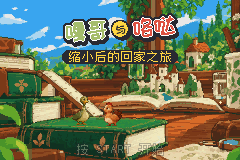

嘎哥与咯哒 像素版
Gage & Geda Pixel
免费 · 无广告 · 无内购Free · No ads · No in-app purchases一只戴单片眼镜的鸭子，一只爱扑腾的小母鸡，被一本书变小了。现在要从书桌这头一路走回窗台：拉杆子、搭书签、托一把、拽一把，一个人轮流操纵两只，谁也离不开谁。
A duck with a monocle and a hen who flaps first and thinks later have been shrunk by a book. Now they have to cross the desk to the windowsill — pulling levers, rigging bookmarks, giving each other a boost. You play both of them, one at a time, and neither gets far alone.
版本 1.0.0 · 需要 Android 11 或以上Version 1.0.0 · Android 11 or later
怎么安装
How to install
- 在手机上点安卓下载。
- 打开下载好的文件。如果系统提示，允许浏览器安装未知应用（装完可以再关掉）。
- 如果 Play 保护机制提示「未知开发者」，点更多详情 → 仍然安装。这个 App 不需要任何权限，也从不联网。
- Tap Download for Android on your phone.
- Open the downloaded file. If Android asks, allow your browser to install unknown apps (you can switch it off again afterwards).
- If Play Protect says the app is from an unknown developer, tap More details → Install anyway. The app needs no permissions and never goes online.
一整本立体书
A whole pop-up book
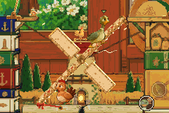
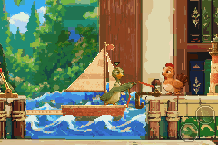
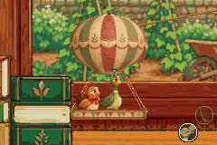
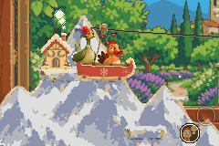
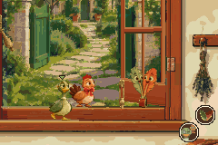
手机上的样子
On your phone
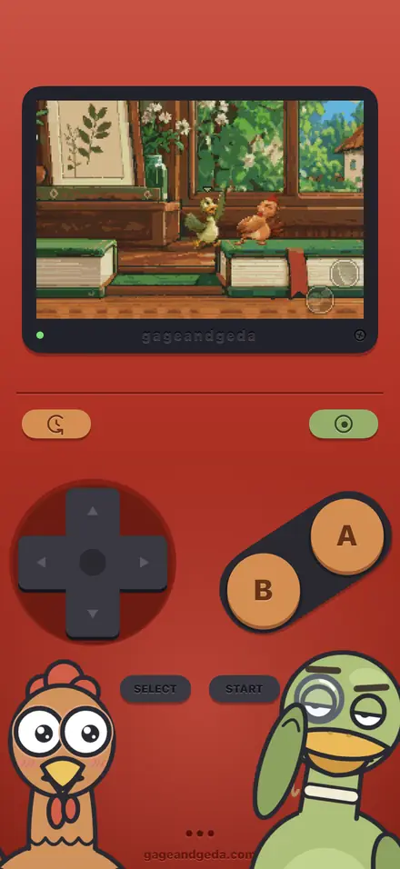
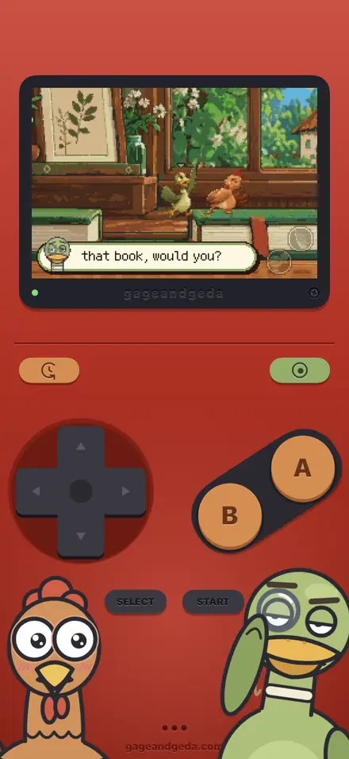
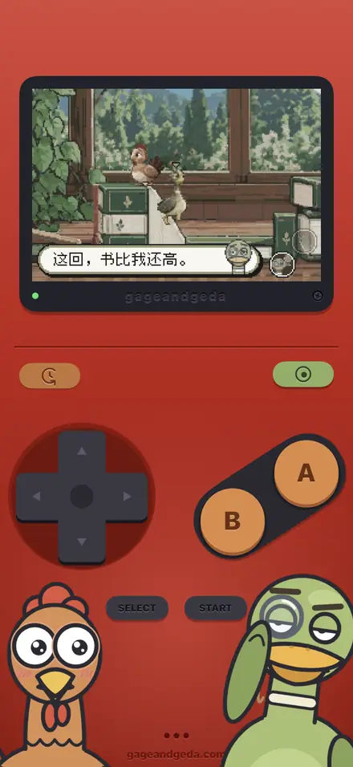
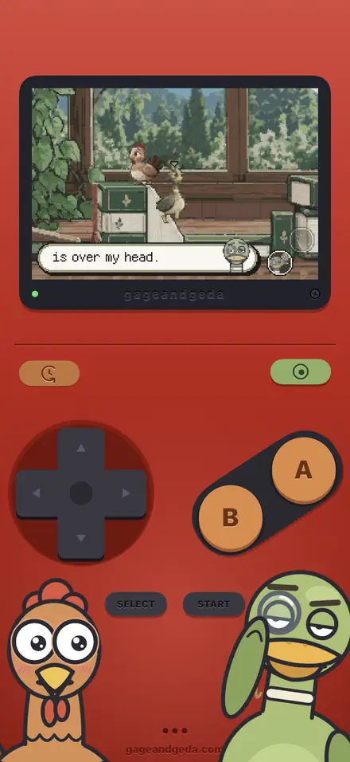
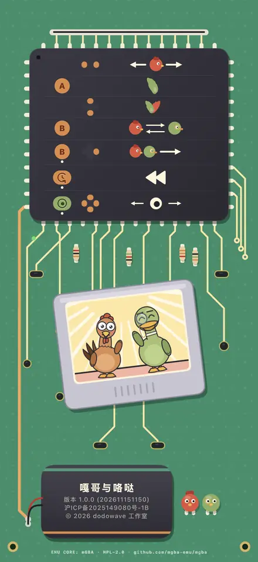
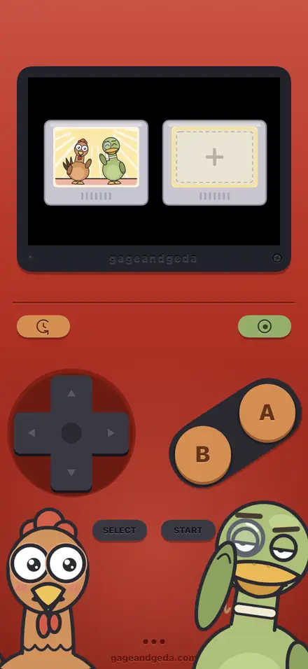
它是怎么来的
How it came about
里面有什么
What's inside
- 十个关卡，一本完整的书Ten routes, one complete book 纸城、港口、风车、集市、雪山……书页一翻，纸景就立起来。从头玩到尾，结尾还有一段动画。 A paper town, a harbour, a windmill, a market, a snowy peak… turn the page and the scenery pops up. Play it start to finish — there's a little film at the end.
- 两只鸟，一双手Two birds, one pair of hands 轻按换同伴，按住一起走。他够不着的地方她能扑腾上去，她拉不动的杆子他来拉。 Tap to swap birds, hold to walk them together. She can flap where he can't reach; he can pull what she can't budge.
- 走错了？倒回去Wrong turn? Rewind 按住 L，时间往回走，不用从头再来。 Hold L and time runs backwards. No starting over.
- 像一台真的掌机Feels like a real handheld 按键、屏幕效果、色调都能调。拧开屏幕边的螺丝，还能看看里面的电路板。 Real buttons, screen filters and tints. Unscrew the screw by the screen and peek at the circuit board inside.
小提示
Good to know
中文、英文两种语言，默认跟随手机。不联网也能玩，不需要注册账号，不收集任何个人数据，详见隐私政策。
In English and Chinese, following your phone's language. Plays fully offline, no account needed, and we collect no personal data — see the privacy policy.
按住 B 加左右时，OPPO／一加手机弹出「识屏」？
Holding B with left/right brings up “screen recognition” on OPPO / OnePlus phones?
ColorOS 会把两根手指同时长按当成系统的识屏手势。可以这样解决（任选其一）：
- 打开「游戏助手」（游戏空间），把「嘎咯像素版」添加为游戏，以后从游戏空间里打开。
- 或者在「设置」里搜索「识屏」，关掉「两指长按识屏」。
ColorOS treats a two-finger long press as its screen-recognition gesture. Either of these fixes it:
- Open Game Assistant (Game Space), add “Gage & Geda Pixel” as a game, and launch it from there.
- Or search Settings for “screen recognition” and turn off the two-finger long press.
想在 GBA 模拟器或掌机上玩？
Want to play it on a GBA emulator or handheld?
下载 GBA 卡带（GageAndGeda-Pixel.gba），放进任何 GBA 模拟器，或 Analogue Pocket 这类能读 GBA 卡带的掌机，就能玩同一本书。
Download the GBA cartridge (GageAndGeda-Pixel.gba) and load it in any GBA emulator, or on a handheld that plays GBA games such as the Analogue Pocket. It's the same book.
APK 的 SHA-256 校验值：SHA-256 of the APK:ef4b852134312e6db0b9f26e60b72295cb021835be2efb031a2fa264f6507397
GBA 卡带的 SHA-256 校验值：SHA-256 of the GBA cartridge:467acf8c12a8d57a3b128dd0fb1e4e92cf18c5ef42781fca1d88bd5b5bc0e631